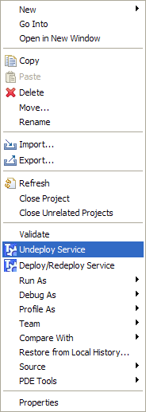

A service can be undeployed to the TOOLBOX RE directly from the TOOLBOX DE. In order to do this, you have to specify the TOOLBOX Url in the service properties (see here) and ask for removeal. This is done selecting the service and right-clicking on it. The figure below shows the popup menu that is displayed.

Select the "Undeploy Service" menu item. The service is remotely deleted and a confirmation (or Error) dialog is displayed notifying the status of the task.